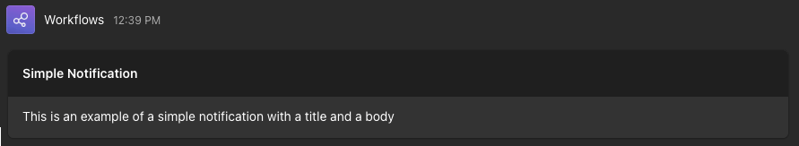
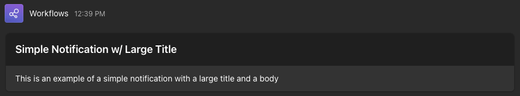
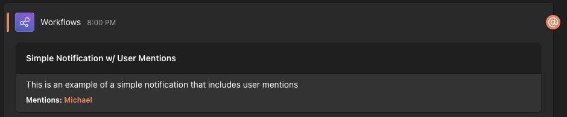
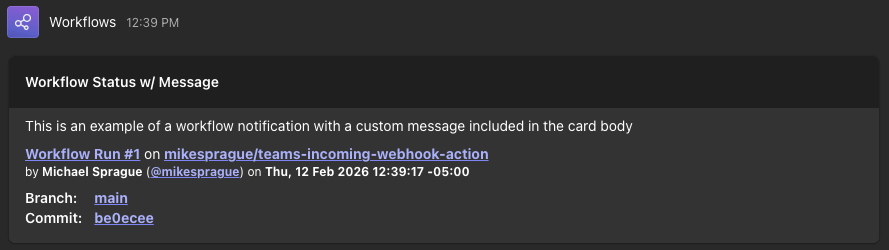
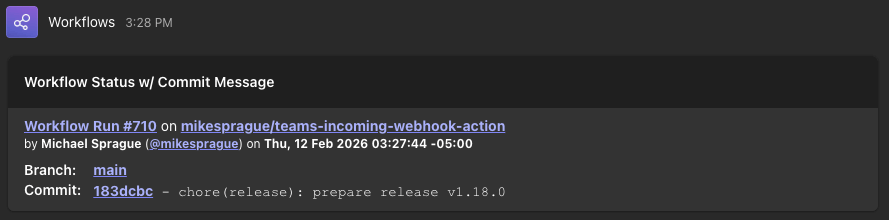
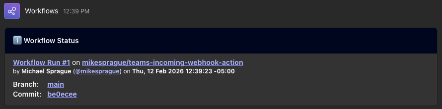
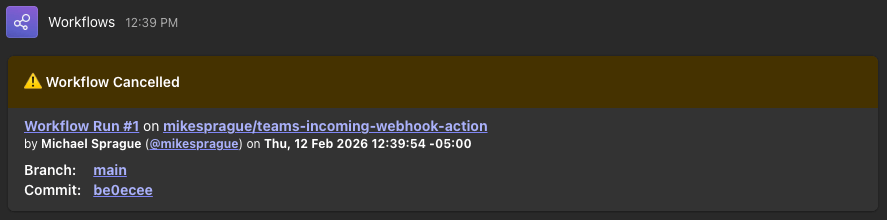
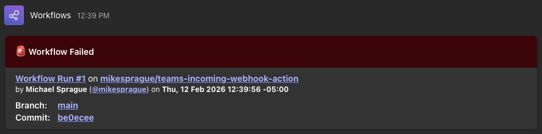
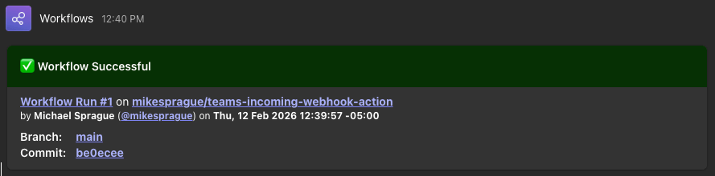
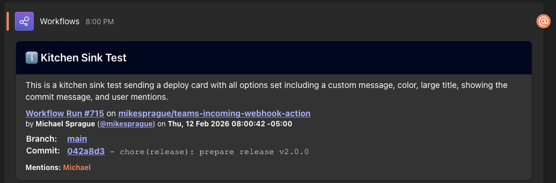

teams-incoming-webhook-action
teams-incoming-webhook-action


Sends an AdaptiveCard notification to an MS Teams Incoming Webhook from a GitHub Action Workflow
This action requires a secret to be set up with your Teams Incoming Webhook URL named MS_TEAMS_WEBHOOK_URL (official docs for creating secrets in your repo)
The action also expects a CODECOV_TOKEN repository secret for Codecov integration. If you do not want to use Codecov, you can comment out the Upload coverage reports to Codecov step in .github/workflows/build-and-test.yml.
Inputs
github-token- required: true
- type: string
- description: GitHub Token for API operations (see examples for how to reference)
- example:
github-token: ${{ github.token }}
webhook-url- required: true
- type: string
- description: MS Teams Incoming Webhook URL
- example:
webhook-url: ${{ secrets.MS_TEAMS_WEBHOOK_URL }}
title- required: true
- type: string
- description: Message title or heading
- example:
title: "Test Message Heading"
title-size- required: false
- type: string
- default:
"Default" - description: Size of the title text - accepts
Default,Largeas values - example:
title-size: "Large"
message- required: false
- type: string
- default:
"" - description: Optional message body; when
deploy-cardistrue, this appears above the deployment details - example:
message: "This is some test message content for a simple notification"
color- required: false
- type: string
- default:
"default" - description: Background color of the heading in the message - accepts
default,info,success,failure,warningas values - example:
color: "info"
deploy-card- required: false
- type: boolean
- default:
false - description: Sends a workflow notification that is built dynamically from commit and repo info
- example:
deploy-card: true
show-commit-message- required: false
- type: boolean
- default:
false - description: Shows the first line of the commit message after the hash on deploy cards
- example:
show-commit-message: true
timezone- required: false
- type: string
- default:
"America/New_York" - description: Timezone to use for timestamps in messages
- example:
timezone: "Europe/Rome"
user-mentions- required: false
- type: string
- default:
"" - description: Teams user mentions in format
name|id, comma separated (e.g.Alice|alice@example.com,Bob|bob@example.com).- Entries formatted incorrectly or otherwise invalid are ignored with a warning in the logs
idshould be the user's Entra ID or UPN (email) for the mention to work properly- If user is not in the same tenant as the Team/Teams Channel the mention will not resolve but will still appear as plain text
- NOTE: only user mentions are currently supported (no group or channel mentions)
- example:
user-mentions: "Alice|alice@example.com,Bob|bob@example.com"
How It Works
When the action runs, it takes the inputs provided and constructs an AdaptiveCard payload that is sent to the specified MS Teams Webhook URL. The card can be customized with a title, message body, color, and can optionally include dynamic information about the GitHub workflow run (like commit message and author). See the Example Usage section for details on how to customize the card with different inputs.
flowchart LR
subgraph Row1[ ]
direction LR
A[GitHub Workflow] --> B["mikesprague/teams-incoming-webhook-action"]
end
subgraph Row2[ ]
direction LR
C[Teams Incoming Webhook] --> D[Teams Channel]
end
B --> C
Example Usage
This action was built with the intention of sending workflow status notifications but also supports a simple message style
Simple Notification
The following sends a simple notification with a title and message
- name: Send simple notification
uses: mikesprague/teams-incoming-webhook-action@v2
with:
github-token: ${{ github.token }}
webhook-url: ${{ secrets.MS_TEAMS_WEBHOOK_URL }}
title: 'Simple Notification'
message: 'This is an example of a simple notification with a title and a body'

Simple Notification w/ Large Title
The following sends a simple notification with a title and message
- name: Send Simple Notification w/ Large Title
uses: mikesprague/teams-incoming-webhook-action@v2
with:
github-token: ${{ github.token }}
webhook-url: ${{ secrets.MS_TEAMS_WEBHOOK_URL }}
title: 'Simple Notification w/ Large Title'
title-size: 'Large'
message: 'This is an example of a simple notification with a large title and a body'

Simple Notification w/ User Mentions
The following sends a simple notification with user mentions
- name: Send Simple Notification w/ User Mentions
uses: mikesprague/teams-incoming-webhook-action@v2
with:
github-token: ${{ github.token }}
webhook-url: ${{ secrets.MS_TEAMS_WEBHOOK_URL }}
title: 'Simple Notification w/ User Mentions'
message: 'This is an example of a simple notification that includes user mentions'
user-mentions: 'Alice|alice@example.com,Bob|bob@example.com'

Workflow Status Notifications
The following examples show how to send notifications based on your workflow status
Workflow Status w/ Message
- name: Send Workflow Status Notification w/ Message
uses: mikesprague/teams-incoming-webhook-action@v2
with:
github-token: ${{ github.token }}
webhook-url: ${{ secrets.MS_TEAMS_WEBHOOK_URL }}
deploy-card: true
title: 'Workflow Status w/ Message'
message: 'This is an example of a workflow notification with a custom message included in the card body'

Workflow Status w/ Commit Message
- name: 📤 Send Workflow Status Notification w/ Commit Message
uses: mikesprague/teams-incoming-webhook-action@v2
with:
github-token: ${{ github.token }}
webhook-url: ${{ env.MS_TEAMS_WEBHOOK_URL }}
deploy-card: true
title: "Workflow Status w/ Commit Message"
show-commit-message: true

Info Notification
Include as first step in workflow to notify workflow run has started
- name: Send Workflow Status Notification
uses: mikesprague/teams-incoming-webhook-action@v2
with:
github-token: ${{ github.token }}
webhook-url: ${{ secrets.MS_TEAMS_WEBHOOK_URL }}
deploy-card: true
title: 'Workflow Status'
color: 'info'

Cancel Notification
Include anywhere in steps to notify workflow run has been cancelled
- name: Send Workflow Cancelled Notification
if: ${{ cancelled() }}
uses: mikesprague/teams-incoming-webhook-action@v2
with:
github-token: ${{ github.token }}
webhook-url: ${{ secrets.MS_TEAMS_WEBHOOK_URL }}
deploy-card: true
title: 'Workflow Cancelled'
color: 'warning'

Failure Notification
Include anywhere in steps to notify when a workflow run fails
- name: Send Workflow Failure Notification
if: ${{ failure() }}
uses: mikesprague/teams-incoming-webhook-action@v2
with:
github-token: ${{ github.token }}
webhook-url: ${{ secrets.MS_TEAMS_WEBHOOK_URL }}
deploy-card: true
title: 'Workflow Failed'
color: 'failure'

Success Message
Include anywhere in steps to notify when workflow run is successful
- name: Send Workflow Success Notification
if: ${{ success() }}
uses: mikesprague/teams-incoming-webhook-action@v2
with:
github-token: ${{ github.token }}
webhook-url: ${{ secrets.MS_TEAMS_WEBHOOK_URL }}
deploy-card: true
title: 'Workflow Successful'
color: 'success'

Kitchen Sink Example
Sends a deploy card with all options enabled - large title, custom message, color, commit message visible, and user mentions
- name: Kitchen Sink Test
uses: mikesprague/teams-incoming-webhook-action@v2
with:
github-token: ${{ github.token }}
webhook-url: ${{ env.MS_TEAMS_WEBHOOK_URL }}
deploy-card: true
title: "Kitchen Sink Test"
title-size: "Large"
message: "This is a kitchen sink test sending a deploy card with all options set including a custom message, color, large title, showing the commit message, and user mentions."
color: "info"
show-commit-message: true
user-mentions: "Alice|alice@example.com,Bob|bob@example.com"

Development
This project uses modern TypeScript with strict type checking and comprehensive test coverage.
Prerequisites
- Bun >= 1.3.x
Setup
bun install
Testing
The project uses Vitest for testing with comprehensive coverage requirements:
bun test uses Bun's built in test runner, we need to explicitly run our test script that uses Vitest with bun run test
# Run tests once
bun run test
# Run tests in watch mode
bun run test:watch
# Run tests with coverage report
bun run test:coverage
# Run tests with UI
bun run test:ui
CI also runs bun run test:coverage, uploads the report to Codecov,
and includes the HTML coverage report in the published docs artifact (docs/publish/coverage)
which is available to view via GH Pages: https://mikesprague.github.io/teams-incoming-webhook-action/coverage/
Coverage Thresholds:
- Lines: 98%
- Functions: 100%
- Branches: 92%
- Statements: 98%
Current Coverage:

Latest Vitest-generated coverage report can always be found at https://mikesprague.github.io/teams-incoming-webhook-action/coverage/ and latest Codecov report can viewed at https://codecov.io/github/mikesprague/teams-incoming-webhook-action
Code Quality
The project uses Oxlint/Oxfmt for linting and formatting:
# Check code quality
bun run lint
# Type check
bun run typecheck
# Build the action
bun run build
TypeScript Configuration
The project uses TypeScript 5.9+ with:
- ES2023 target for modern JavaScript features
- Strict mode enabled with balanced strictness flags
- ESM module system with bundler resolution
- Top-level await support
Documentation
This project uses TypeDoc to generate API documentation during CI (bun run build) via the postbuild script.
The generated docs are published to GitHub Pages at https://mikesprague.github.io/teams-incoming-webhook-action/.